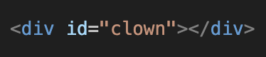
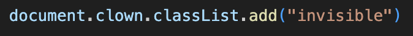
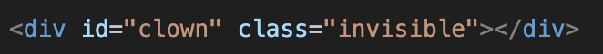
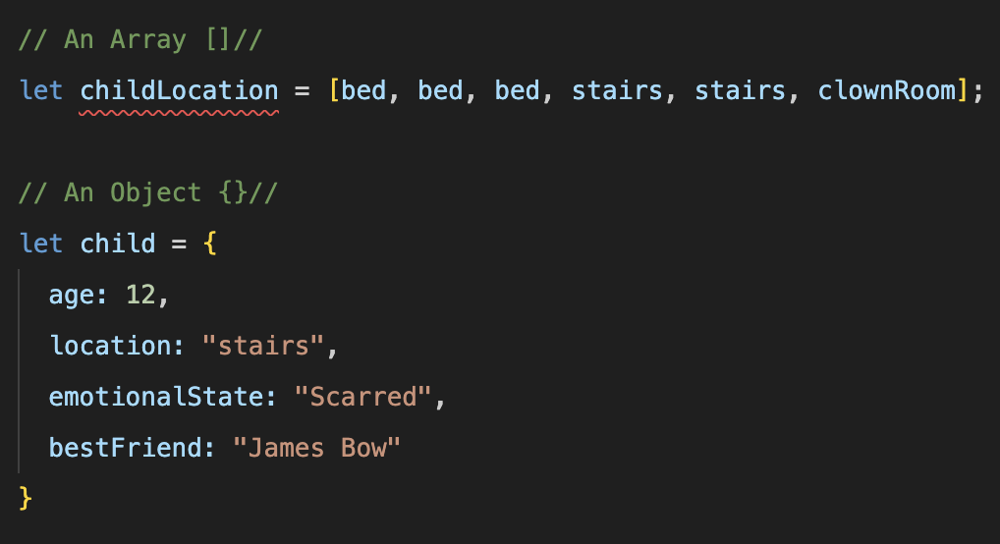
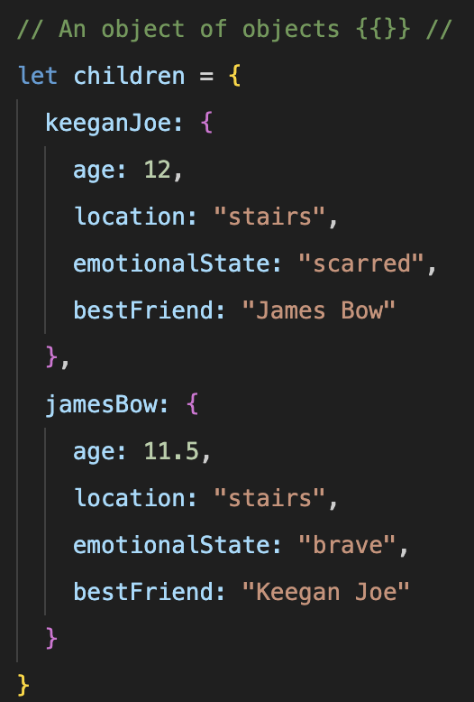

HTML and Javascript
(And Scary Clowns)

interacting with HTML, CSS, and JavaScript is like being haunted by a scary clown.
HTML defines a clown’s basic elements - The presence of facepaint, a fake nose, etc.
CSS defines what makes those elements scary. e.g. the facepaint is blood-like and cracked, the nose is burgundy, etc.
Javascript defines how the scary clown haunts you e.g. does it stand at the foot of your bed smiling at you until you blink? Does it wait until you stick your hand into the InSinkErator and then mouth-breathe your mother’s name into your ear?
Control Flow and Loops
(And Scaring Small Children)
Using control flow means that our code doesn’t have to be performed from top to bottom no matter what like an itemized list. Controlling the flow means that, given certain circumstances, instructions can be repeated, or skipped altogether.
For example, imagine that we are a scary clown who wants to haunt a small child.
We are a clown who DOES NOT use control flow
we might walk up to the child at 2pm while the child is in a room full of people, jump once, disappear, laugh, and then say “one cheeseburger please”. But that wouldn’t be very scary.
We are a clown who DOES know how to use control flow
We might wait until it’s nighttime and the child is trying to sleep. Then we can go to the room above the child’s room and jump up and down repeatedly until the child comes upstairs to investigate. Then we can disappear 0.1s after the child sees us. Then when the child turns their back to leave the room we can laugh softly - yet audibly for the child. And then when we are driving back home and the child is nowhere in sight, we can then order ourselves a celebratory cheeseburger. The scary clown who uses control flow will terrify the child.
Loops are essential for effective hauntings as well. In the case above the scary clown might not know how many times to jump up and down before each child comes to investigate. In this way adding loops can mean that our instructions are responsive to changing conditions e.g. the jumping will stop once the child has come to investigate.
The DOM
(I promise I am not psychotic)
On your computer you can edit the Javascript, CSS and HTML files separately but the DOM combines all of your files in order to create a combined file. Much of its HTML code and styling is inherited from its .css and .html parents. It is taught how to behave using Javascript. When we change our HTML files, our DOM HTML will change. But when we use javascript to change the DOM’s HTML elements, the parent HTML page will not change.
For example, we might have this element in our index.html file:
And we might add an additional class to our DOM using javascript.
This means the HTML code in our DOM will now look more like this:
Even though the original index.html file looks exactly the same!
Arrays Vs. Objects
(I didn't read the bit about the example needing to be a "regular activity". I want to be clear this was a mistake. I am normal and therefore dressing up as a scary clown is not an every day activity for me.)
Arrays are a list of things contained in square brackets.
Objects are a list of properties that have both a key and a value in curly brackets.
you can also combine e.g. an object of objects e.g.
Functions
(I just watched a scary clown movie recently so they are on the brain.)
Functions are a chunk of text which can be used over and over again with minimal effort. Instead of telling the clown to:
bend its knees, push off the ground with 900N of force, wait until its feet hit the ground again and then wait 5 seconds and then bend its knees, push off the ground with 900N of force, wait until its feet hit the ground again and then…
When we use functions, we only need to write out how the clown will jump once and then we can call the clownJump() function every time we want the clown to jump. This makes our code cleaner!